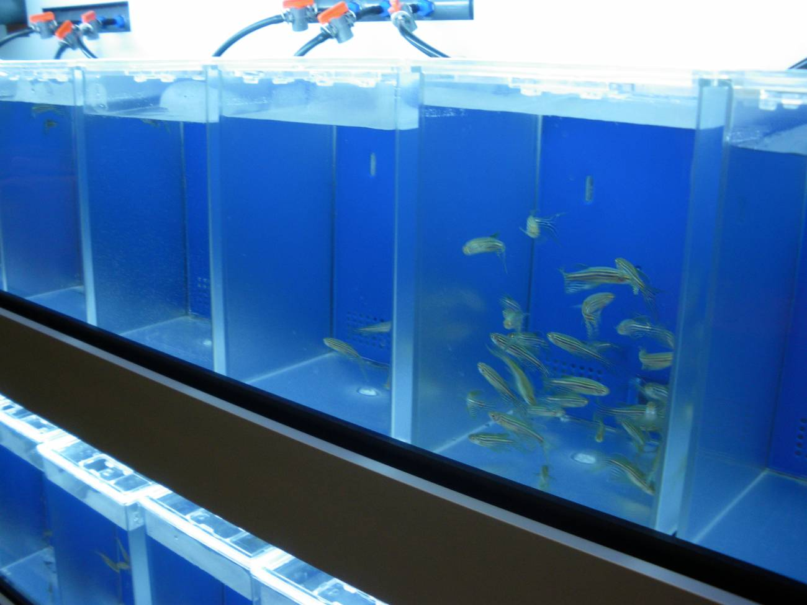
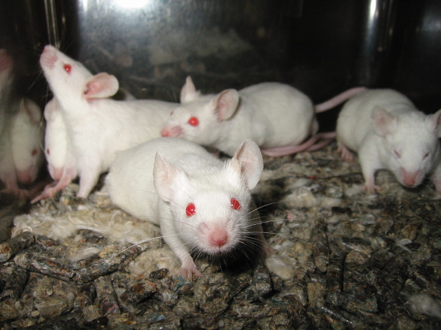

tipos de animales donde se experimentan
Ratones: se usan porque son pequeños, baratos de mantener y su cuerpo funciona parecido al humano en muchas cosas. Además se reproducen rápido, así que sirven para estudiar enfermedades y medicamentos.
Perros: en algunos laboratorios se usan para estudiar el corazón, medicamentos y efectos tóxicos porque ciertas funciones de su cuerpo se parecen a las humanas.
Conejos: se usan mucho para pruebas de irritación en piel y ojos porque sus ojos son sensibles y permiten ver reacciones químicas fácilmente.
Peces: se usan para estudiar contaminación y efectos químicos en el agua, además de cómo afectan el desarrollo de los seres vivos.
Monos: se usan porque son muy parecidos biológicamente a los humanos. Ayudan en investigaciones complejas como vacunas o enfermedades del cerebro.

